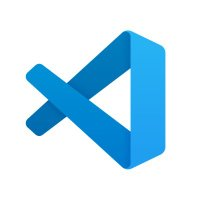
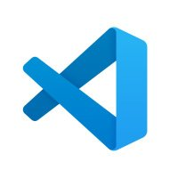
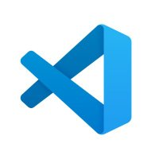

| HERRAMIENTAS | DESCRIPCIÓN |
|---|---|
| Visual Studio Code (VSCode) | |
| • Ligero y Eficiente | Editor de código ligero y eficiente. Su rendimiento rápido hace que sea una herramienta ágil ya que consume pocos recursos. |
| • Integración con Control de Versiones | Utilizamos la integración con GitHub. Esto facilita la colaboración y el seguimiento de cambios en el código fuente de la aplicación PWA. |
| • Soporte para Tecnologías Web Modernas | Soporte para las tecnologías web modernas, incluidas las herramientas para trabajar con HTML, CSS, JavaScript, que son comúnmente utilizados en el desarrollo de PWAs. |
| XAMPP | |
| • Configuración Rápida y Sencilla | Proporciona un entorno de servidor local listo para usar que incluye Apache, MySQL, PHP. Esto facilita la creación de un entorno de desarrollo local sin la necesidad de configuraciones extensas. |
| • Multiplataforma | XAMPP es multiplataforma, lo que significa que está disponible para Windows, macOS y Linux. Esto permite trabajar en diferentes sistemas operativos sin tener que preocuparse por la compatibilidad del entorno de desarrollo. |
| • Configuración para Aplicaciones Web Progresivas (PWA) | XAMPP puede configurarse para servir aplicaciones web progresivas, y la combinación de Apache y PHP permite implementar fácilmente la lógica del lado del servidor necesaria para una PWA. Además, es posible configurar un servidor local con HTTPS, un requisito para ciertas características de las PWAs, como Service Workers. |
| • Soporte para PHP y MySQL | PHP y MySQL son tecnologías comúnmente utilizadas en el desarrollo de aplicaciones web. XAMPP incluye soporte para estas tecnologías, lo que facilita la creación de aplicaciones basadas en bases de datos y el desarrollo de lógica del lado del servidor. |
| GitHub: | |
| • Control de Versiones y Colaboración: | GitHub proporciona un robusto sistema de control de versiones a través de Git. Permite un seguimiento detallado de cambios en el código y facilita la colaboración entre miembros del equipo mediante la gestión de ramas, pull requests y revisiones de código. |
| Plantillas de Splash y Home | Configuracion Inicial de GitHub | ||||
|---|---|---|---|---|---|
| • HTML, CSS y JavaScript para crear las pantallas de Splash y Home. | 1.Creación de Repositorio: | 2.Configurar las credenciales de Git | 3.Crear un commit | 4.Subir el repositorio | |
| Configurar la pantalla de Splash utilizando Service Workers y manifest.json para especificar la apariencia y el comportamiento. | Crear un nuevo repositorio en GitHub para el proyecto. | a. git config user.name b. git config user.email | a.git commit -m | a.git branch b.git remote add origin | |
